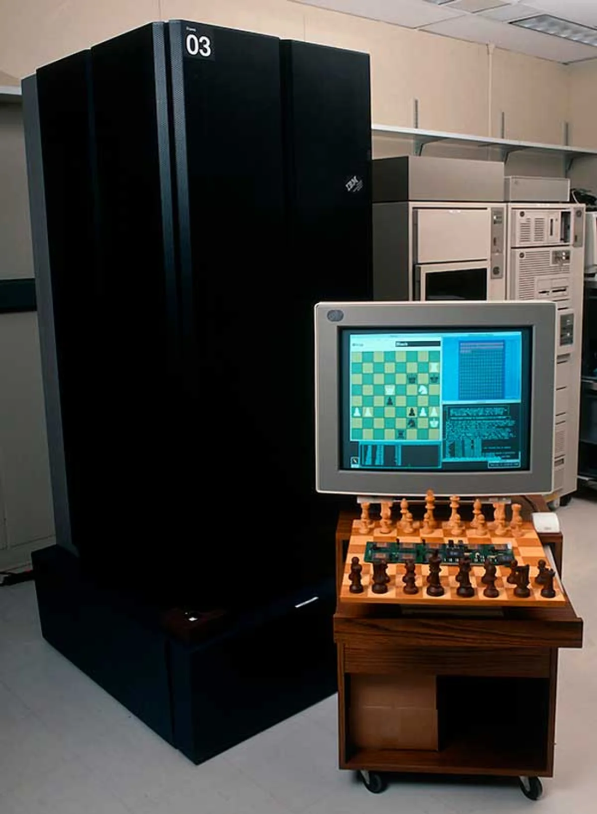
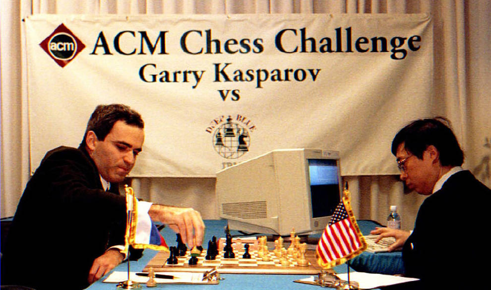

El día que cambió la humanidad
En mayo de 1997, el mundo fue testigo de un
enfrentamiento histórico. No era un campo de batalla
tradicional, sino un tablero de ajedrez. Por un lado,
Garry Kasparov, considerado el mejor ajedrecista de
todos los tiempos, un genio humano que había reinado
como campeón mundial desde 1985. Por el otro, Deep
Blue, una supercomputadora desarrollada por IBM,
creada específicamente para desafiar los límites del
intelecto humano en el ajedrez.
Este evento no solo era un duelo entre un hombre y
una máquina, sino también un símbolo del avance
tecnológico y la pregunta que rondaba en el aire:
¿podría una inteligencia artificial superar a la
mente humana en su propio juego?

El enfrentamiento consistió en seis partidas, jugadas entre el 3 y el 11 de mayo de 1997. Kasparov llegaba al evento con confianza: había derrotado una versión anterior de Deep Blue en 1996 con un contundente marcador de 4-2. Sin embargo, IBM no se quedó atrás. Para esta nueva versión, Deep Blue había sido mejorada significativamente. Con la capacidad de calcular 200 millones de posiciones por segundo, era una fuerza que Kasparov no debía subestimar.

La primera partida empezó con un golpe para la
máquina. Kasparov mostró su superioridad inicial al
ganar de manera contundente. El campeón parecía
inquebrantable, demostrando que la intuición humana
todavía era superior a los cálculos fríos de la
computadora.
En la segunda partida ocurrió lo inesperado. Deep
Blue jugó un movimiento extraordinario: un
sacrificio posicional que confundió a Kasparov.
El campeón, acostumbrado a enfrentarse a humanos,
quedó desconcertado. Se rindió tras 45 movimientos,
sin explorar las posibilidades de defensa.
El movimiento provocó un debate: ¿había sido
producto de la programación o había surgido algo
que parecía creatividad? Kasparov comenzó a
sospechar de posibles intervenciones humanas en la
máquina.
Las siguientes partidas fueron más equilibradas.
Deep Blue y Kasparov empataron las partidas tres,
cuatro y cinco. Sin embargo, el campeón parecía cada
vez más tenso. Los movimientos impredecibles de la
máquina y su resistencia al error comenzaron a
desgastarlo mentalmente.

La sexta partida fue un golpe definitivo. Deep Blue jugó de manera agresiva desde el inicio, utilizando una apertura que Kasparov no esperaba. En tan solo 19 movimientos, Kasparov cometió un error crítico y se rindió, marcando la primera vez en la historia que un campeón mundial de ajedrez era derrotado por una máquina en un formato de torneo.
Kasparov declaró después que sentía que había
luchado "contra toda la humanidad", en referencia
al equipo de IBM detrás de Deep Blue. La derrota no
solo marcó un momento clave en la historia del
ajedrez, sino también en la evolución de la
inteligencia artificial.
El duelo entre Garry Kasparov y Deep Blue fue más
que una partida de ajedrez: fue un símbolo de una
nueva era. Aunque Kasparov perdió, su legado como
uno de los más grandes jugadores de la historia
permaneció intacto. Al mismo tiempo, Deep Blue
demostró el potencial de la inteligencia artificial
y abrió las puertas a nuevas preguntas sobre el
lugar del ser humano frente a las máquinas.
"Garry no creía que hubiera sido golpeado por una
entidad más fuerte que él, pero sabía que eso iba
a venir. Inmediatamente después de esto comenzamos
a discutir qué podemos hacer al respecto. Una de sus
ideas era "Ajedrez Avanzado", que es un humano y una
computadora que juega contra un humano y una
computadora. Esto haría que el sistema fuera más
fuerte que el humano o la computadora sola."
- Friedel, Frederic (2022)
"La celebración del cuarto de siglo de aquella victoria
nos sirve para darnos cuenta de que, efectivamente,
señalaba un camino imparable en el que estamos hoy
plenamente inmersos. Es un camino lleno de éxitos y
oportunidades, pero no exento de riesgos en los que
es necesario trabajar."
- Sevilla, Joaquín (2021)